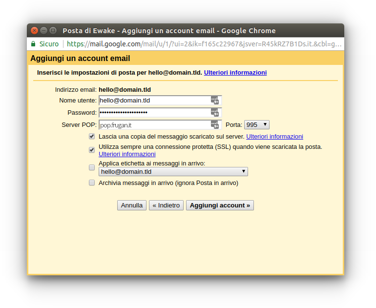
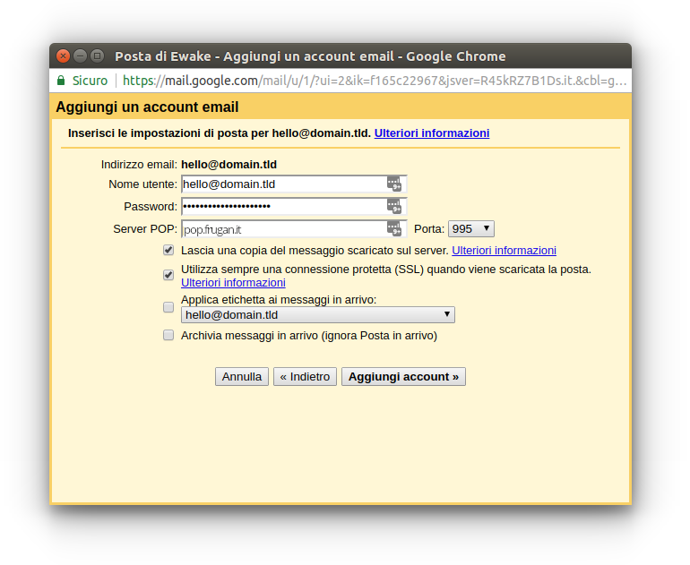
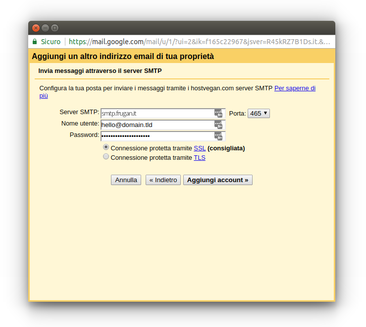
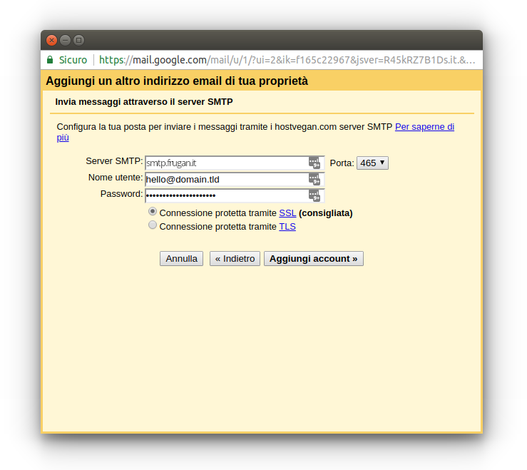
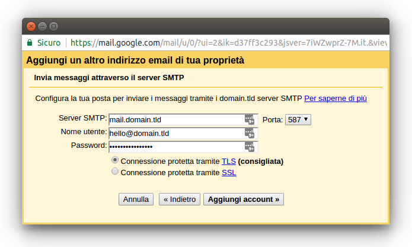
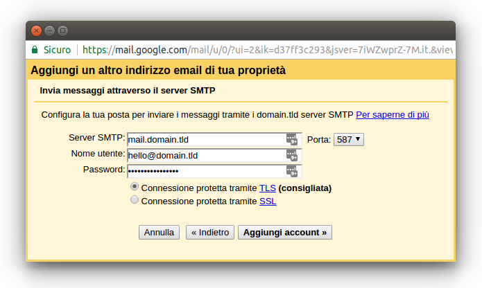

Suggerimenti¶
Gestione dello SPAM¶
La lotta allo SPAM può avere successo solo se si opera su più fronti: lato server e lato utente.
Sui server di posta avvengono dei processi automatici, generalmente notturni, che:
- classificano come indesiderate tutte le email presenti nelle cartelle SPAM degli utenti
- classificano come desiderate tutte le email presenti nelle cartelle ARCHIVIO degli utenti
- cancellano le email più vecchie di 90 giorni presenti nelle cartelle SPAM degli utenti
Lato utente è quindi di fondamentale importanza:
- non cancellare o spostare nel cestino le email indesiderate, ma spostarle nella cartella SPAM, altrimenti il filtro antispam non impara a classificare la posta indesiderata
- utilizzare la funzione “Archivio” presente sia nelle più comuni webmail che nei client di posta (Outlook, Thunderbird, etc.) per tutte le email desiderate, in modo da evitare i falsi positivi del filtro antispam
- non archiviare mai le email indesiderate, altrimenti il filtro antispam classifica come desiderata anche la posta che dovrebbe essere indesiderata
Recupero e invio della posta esterna tramite Gmail¶
Gmail permette l’aggiunta di ulteriori account di posta esterni a Gmail (fetchmailing) sia in arrivo che in uscita.
È possibile quindi utilizzare Gmail per collegarsi ai server di posta EWake, impostando gli stessi parametri riportati in email-conf-ref1.
Di seguito alcune schermate indicative:
 

 

Errore Connection refused su Gmail¶
Se si utilizza Gmail per collegarsi ai server di posta EWake, è possibile riscontrare l’errore Connection refused con il parametro pop.ewake.it in abbinamento alla connessione SSL sulla porta 995.
Il problema su Gmail si presenta analogamente anche con la configurazione della posta in uscita per gli stessi account esterni.
Come indicato qui, l’errore sembra dipendere da problemi di risoluzione dei DNS da parte di Google.
 

Temporanemente è possibile risolvere il problema utilizzando i seguenti parametri alternativi:
| Posta in arrivo - POP3 | |
|---|---|
| Server | mail.domain.tld |
| Porte | 110 |
| Connessione protetta | no |
| Autenticazione | password normale |
| Posta in uscita - SMTP | |
|---|---|
| Server | mail.domain.tld |
| Porte | 587 |
| Connessione protetta | TLS |
| Autenticazione | password normale |
dove domain.tld corrisponde al dominio ospitato presso EWake.